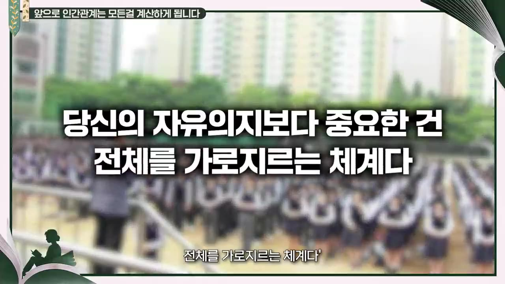
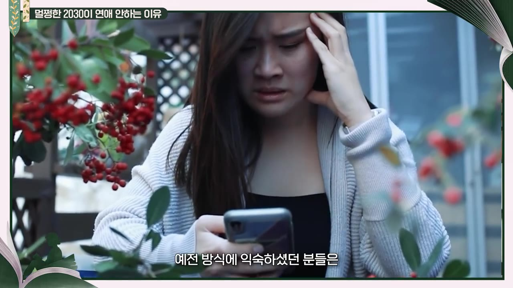
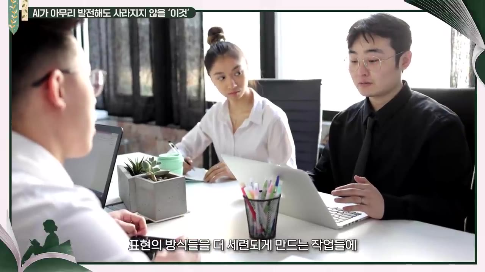

퇴사하는 에이스, 더 이상 회사가 붙잡지 않는 이유 ㅣ Ep. 책과사람 186 (송길영 작가 2부)
▶ 원본 영상 보기한눈에 보기
- 회사와 개인이 맺던 '젊을 때 헌신하고 나중에 보상받는' 장기 계약이 깨졌고, 이제는 매년 보상을 원하고 회사도 떠나는 에이스를 붙잡지 않는다.
- 관리라는 일이 사라지면서 팀장도 직접 일하는 '플레잉 코치'가 되고, 스스로를 관리자로만 정의한 사람은 떠날 수밖에 없다는 것이 송길영 작가의 진단이다.
- 조직의 울타리가 없어지면 '상대가 나를 만나고 싶어야' 일이 되므로, 친절(be kind)과 수평적 태도가 생존 조건이 된다.
- 인간관계와 연애는 넓고 얕은 관계에서 취향 중심의 소수 관계로 바뀌고, 에너지가 한정돼 있어 '손절'도 자연스러워진다.
- AI 시대에는 현장에서 바로 증명하는 즉흥 말하기가 중요해지고, 변화 속도는 지난 4년보다 앞으로의 4년이 더 빠를 것이라고 본다.
이런 분께 도움이 됩니다
- 이직·퇴사·은퇴를 앞두고 커리어를 다시 정의해야 하는 4050 직장인
- 팀장·관리자 역할이 줄어드는 변화를 체감하는 사람, 바뀐 인간관계 방식이 낯선 사람
핵심 내용
평생직장이 끝난 이유: 장기 계약이 깨졌다
- 예전 직장은 회사와 개인 사이의 장기 계약이었다. (2:38)
- 신입은 "배운 건 없지만 배울 자세가 돼 있다", 포부는 "이 회사 사장이 되는 것"이라고 말했다.
- 젊을 때 투자하고, 보상은 나이 든 뒤 고위직으로 받는 구조였다.
- 지금은 근속 기간이 짧아지고 새 직종이 계속 생겨 '나중에 보상'이 통하지 않는다. (3:00)
- 그래서 성과급 논란처럼 매년 바로 보상받기를 원한다 — 회사도 개인도 장기 계약이 끝났다는 데 이미 공감하고 있다. (3:23)
💡 '나중에 보상해 줄게'가 통하지 않으니 회사도 떠나는 에이스를 붙잡을 수단이 없다.
관리자가 사라지고 모두가 플레이어로
- 영화 「어쩔 수가 없다」와 드라마 「서울 자가에 대기업 다니는 김 부장 이야기」(자막상 '서울 자가의 김부장')가 같은 해에 함께 흥행한 것에 주목했다. (1:07)
- 두 작품 모두 한 가지 일을 오래 한 사람이 커리어를 잃었을 때의 좌절이 주제다.
- 원작은 오래된 작품인데 큰 자본으로 동시에 영상화됐다 → 대중이 이 주제를 받아들일 준비가 됐다는 신호로 해석.
- 예전 팀장의 일은 진척도 확인, 부족한 구성원 독려였다. 이제는 모든 것이 보이므로 이 역할이 사라지고 있다. (1:52)
- 팀장도 직접 일하는 '플레잉 코치'로 바뀌는 중이다. 스스로를 '관리자'로만 정의한 사람은 떠날 수밖에 없다. (2:14)
💡 관리만 하던 자리는 사라진다 — 직접 성과를 내는 플레이어가 돼야 남는다.
퇴사의 두 얼굴과 4050이 우울한 이유
- 퇴사자의 모습이 바뀌었다. 10년 전에는 정년·명예퇴직의 무기력한 모습이었다면, 지금은 젊은 퇴사·이직자가 많고 퇴사 브이로그의 분위기도 달라졌다. (3:47)
- AI가 갑자기 오면서 해외 선도 기업 중심으로 빠른 직종 전환이 일어나고 있고, 준비된 사람과 아닌 사람이 갈린다.
- 새 직업 찾는 과정을 소셜미디어에 공개하며 인플루언서가 되려는 사람도 있다.
- 조직 전제의 커리어 → 개인이 삶을 펼치는 과정 자체가 상품이 되는 사회로 이동 중이며, 그 끝을 작가는 '수고 경제'라고 부른다. (4:32)
- 피동적 퇴사와 능동적 퇴사 비교:
| 구분 | 피동적 퇴사 | 능동적 퇴사 |
|---|---|---|
| 조직과의 관계 | 아직 정리 못 함, 억울함이 남음 | 일을 놓을 준비를 끝냄, 홀가분함 |
| 다음 행보 | 주체적 시도보다 재고용을 주로 모색 | 꼭 조직에 다시 들어가지 않기도 함 |
- 우울할 때 가장 하지 말아야 할 일은 과거 돌아보기다. "그 집 살 걸, 그 주식 살 걸"은 후회의 감정을 토로하는 것에 불과하다. (5:17)
- 대신 미래를 논리적으로 설계해야 하고, 전문성 없는 분야에서 주체성 없이 고르는 방식(불안을 부동산·주식으로만 돌리는 것 등)은 위험하다고 봤다.
- 생업과 사회적 기여로 직업을 정의해야 수익 가능성이 유지된다.
💡 지금 많은 사람이 동시에 '내 업이 무엇인가'를 다시 정의해야 하는 시점에 놓였다.
상대가 나를 만나고 싶어야 일이 된다
- 사람을 안 만나도 되는 시대가 됐기 때문에, 생업을 유지하려면 거꾸로 세 가지가 필요하다고 정리했다. (6:24)
- 상대가 '사람'인 대상을 찾아야 한다.
- 내 수고에서 감동을 느낄 수 있게 그 흔적이 남아 있어야 한다.
- 상대가 나를 만나고 싶어야 한다 → 해야 할 일은 be kind. (6:46)
- 예전에는 큰 기관 담당자가 거칠게 말해도 "도장은 받아야 하니까" 참았다. 조직이 빠지고 각자 일하게 되면 "저분 좋은 분이에요? 그럼 만나 볼게요"로 바뀐다. (16:22)
- 조직의 울타리가 사라지면 '민낯'이 드러나고, 관계는 호혜성이 되므로 대접받고 싶은 대로 대접해야 한다.
💡 직함이 사라지면 남는 경쟁력은 '다시 만나고 싶은 사람'인지 여부다.
수직에서 수평으로
- 브라이언 헤어·버네사 우즈의 『다정한 것이 살아남는다』를 인용: 적자생존이 아니라 다정한 생명체가 살아남았고, 그 예가 개다. (7:09)
- 지금까지의 집단 관계는 '일사불란함'을 위해 위계(지휘통솔 체계)를 기반으로 했다는 걸 인정해야 한다.
- 예: 어린 학생들을 추운 날 세워 놓고 줄 맞추게 했던 '애국 조회' — 개인 의지보다 체계가 중요하다는 방식.

- 이 방식으로는 자유 의지로 만나는 관계가 유지되지 않는다. 마음속에서 빨리 수직을 내리고 수평으로 바꾸지 못하면 '핵개인의 수고의 시간'을 살기 어렵다. (7:55)
연애·인간관계는 '넓고 얕게'에서 '취향 중심 소수'로
- 연애 빈도가 줄었다는 통계가 여럿 나오지만, 확실한 건 연애 방식 자체의 변화다. (8:19)
- 지인·가족·학교 소개 → 온라인으로 이동 → 이제는 온라인에 피로감.
- 지금은 러닝 크루·독서 모임처럼 취향이 같은 사람을 오래 관찰하며 깊이 만나는 쪽으로 간다.
- 연애 예능이 성행하는 건 만남을 판타지처럼 보여 주고, 만남에 드는 비용이 커졌다고 느끼기 때문. 그래도 사람들이 만남을 잊지 않았다는 점이 소중하다고 봤다.
- '손절'이 흔해진 이유: 관계의 면적이 넓어졌기 때문. (9:50)
- 한 반 친구 20명과도 다 대화하기 버거운데, 팔로워 2만 명과는 불가능하다.
- 에너지와 시간을 어디에 쓸지 할당하는 과정에서 예전 관계가 정리된다. 예전 방식에 익숙한 사람은 이 변화에 상처받기도 한다.

- 관련 책으로 '손절 사회'(이승현 작가, 자막상 불분명)를 언급.
- 결론: 에너지는 한정돼 있고 관계는 상호작용이다. 서로 주고받을 수 있는 적정선, 즉 '골디락스'를 찾게 될 것이다. (10:37)
- 예전 친구는 뭐든 같이 했지만(딱지·구슬 — 재밌던 건 딱지가 아니라 친구와 노는 것), 지금은 "이 취미는 이분들과, 이 공부는 저분들과"로 분화된다.
- 그만큼 관계별 기본 소양을 갖추고, 그 이상을 바라지 않도록 관계의 범위를 정하는 숙제가 생겼다.
정기적으로 만나는 사람이 필요하다
- 은퇴한 주변 사람들이 가장 힘들어하는 건 사람을 만날 수는 있지만 매번 같은 얘기를 처음부터 해야 한다는 것. 관계가 쌓이지 않는다. (11:49, 12:07)
- 오래된 친구와는 "뭐 알잖아, 영화나 보러 갈까"가 된다. 이런 지속적 관계를 예전엔 직장 동료가 해 줬다.
- 직장 관계가 끝나면 그런 관계를 어떻게 새로 시작할지가 숙제라고 말했다.
말하기 역량이 다시 중요해진다
- 예전 학교에서 가장 많이 들은 말은 "조용히 해" — 한 반 70명에 교사 1명이었기 때문. 지금은 발표 등 공적 말하기를 가르친다. (12:54)
- 반면 사적 말하기는 더 어려워졌다. 상대를 배려해야 하니 쓰면 안 되는 표현, 주제 선정, 말하는 방식을 따로 익혀야 한다 — 모두가 '현행화'해야 할 부분.
- AI와도 대화로 소통하고, 글쓰기도 말하기의 연장으로 확장되므로 언어 능력은 더 중요해진다.
- 평가도 말하기 중심으로 바뀌는 중: 글쓰기는 AI 도움을 받았을 수 있다는 의심 때문에 현장에서 바로 증명하길 원한다. (14:01)
- 작가는 이것이 바람직한지는 모르겠다면서도, 즉흥 말하기는 피할 수 없게 됐다고 봤다. 깊이 생각하는 체계를 갖추고 표현을 세련되게 다듬는 데 사람들이 더 몰두할 것이다. (14:24)

💡 시간을 두고 낸 결과물은 'AI가 했나?' 의심받는다 — 그 자리에서 말로 증명하는 힘이 몸값이 된다.
변화의 속도와 '시대예보' 시리즈의 흐름
- 『경량문명』이 "태풍 옵니다, 대비하세요" 같은 특보였다면, 『수고인류의 시간』은 장기 예보다: "인간은 각자 살아가겠지만 잘 살 것이고, 잘 살아야 한다." (14:48)
- 시리즈 전체는 '개인의 분투기'라고 설명했다.
🔁 송길영 '시대예보' 시리즈의 흐름 (15:11)
- 핵개인
- 호명사회
- 경량문명
- 수고인류
- 1핵개인
조직·가족에서 분리돼 각자 살아가는 개인의 등장
- 2호명사회
자막상 '허명사회'. 이름으로 불리는 개인의 시대
- 3경량문명
AI로 인한 변화에 대비하라는 '특보'
- 4수고인류
각자 변한 뒤 어떻게 살아남을지에 대한 장기 예보
- 예년이라면 20년(뒤에서는 200년이라고도 표현)쯤 걸릴 일이 4년 안에 일어났다고 봤다. (15:35)
- "우리 직종은 아니다"라는 사람도 있지만, 4년 사이에도 부가가치가 재편되는 사례가 계속 나온다.
- AI가 AI를 만드는 '재귀적 자기 개선'(자막상 '재귀적 장애 개선') 단계에 접어든 것도 아주 최근이므로, 앞으로 4년은 지난 4년과 다른 속도일 것이라고 말했다.
기억할 숫자·인용
- "상대가 나를 만나고 싶어야 내가 일을 할 수 있어요." — 송길영
- 해야 할 일은 "be kind"
- 한 반 친구 20명 vs 팔로워 2만 명 — 모든 관계를 유지할 수 없는 이유
- 예전 교실: 한 반 70명에 교사 1명 → "조용히 해"
- 20년(또는 200년) 걸릴 변화가 4년 안에 — 앞으로 4년은 더 빠를 것
- 인용 도서: 『다정한 것이 살아남는다』(브라이언 헤어·버네사 우즈)
생각해볼 점
- 변화 속도를 "20년"이라고 했다가 "200년"이라고도 해서 수치가 엇갈린다. 'AI 시스템이 나온 지 14년이 안 됐다'는 부분도 자막상 불분명하다. 구체적 숫자보다 '빠르다'는 방향성으로 받아들이는 편이 안전하다.
- '관리자는 떠날 수밖에 없다'는 진단은 작가의 관찰과 해석이다. 조직 규모·업종에 따라 관리 역할이 남는 곳도 있을 수 있다(내 의견).
- 즉흥 말하기 중심 평가에 대해서는 작가 스스로도 "바람직한지 모르겠다"고 했다. 말하기가 서툰 사람이 불리해지는 문제는 따로 따져 볼 필요가 있다.
바로 해볼 일
- 내 업무에서 '관리'와 '직접 하는 일'의 비중을 적어 보고, 직접 성과를 내는 일 하나를 늘려 보기
- 회사 밖에서 정기적으로 만날 취향 모임(독서·러닝 등) 하나 찾아보기
- 오늘 만나는 사람에게 직함이 아니라 '다시 만나고 싶은 사람'으로 대하고 있는지 점검하기